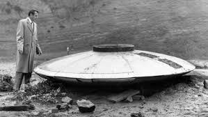
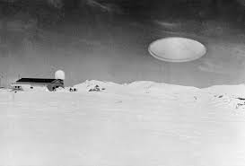
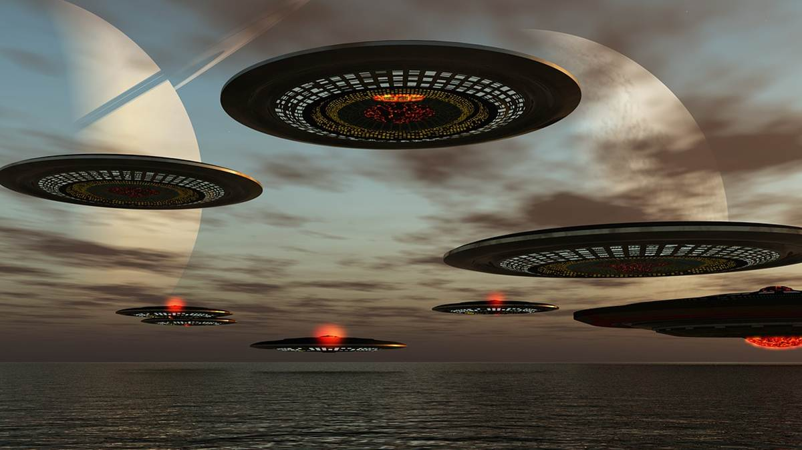
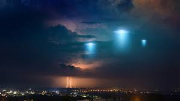

An unidentified flying object (UFO) is any perceived aerial phenomenon that cannot immediately be identified or explained. Most UFOs are identified or investigated as conventional objects or phenomena. The phrase was coined as an acronym by Project Blue Book project head Edward J. Ruppelt, but today UFO is widely used as a stand-in for extraterrestrial spacecraft-aircraft claimed to be observed by various people. Many UFOs are described as being flying saucers, as is shown in the image to the right.
Studies and investigations into UFO reports have been conducted by various governments worldwide, along with private individuals and organizations. In the United States, studies began in the late 1940s and have included Project Grudge, Project Sign and Project Blue Book. The latter was ended in 1969–1970 after the Condon Committee officially concluded that the subject failed to merit further study.
 Unidentified lights and flying objects have been reported in the skies for much of human history. Skeptics including various scientists, and organizations such as the Committee for Skeptical Inquiry, state that the entire topic can be explained as conventional objects or phenomena, while self-styled "Ufologists" disagree and instead argue in favor of various extravagant hypotheses. The topic of UFOs has been, and is currently, popular in worldwide culture in fictional movies, television and other media. UFO reports are also the subject of continuing fascination in sensationalist media.
 Observations of aerial phenomena have been described throughout history and continue to be the subject of interest by skywatchers. Some of these phenomena include comets, bright meteors, one or more of the five planets that can be readily seen with the naked eye, planetary conjunctions, or atmospheric optical phenomena such as parhelia and lenticular clouds. An example is Halley's Comet, which was recorded first by Chinese astronomers in 240 BC and possibly as early as 467 BC. Such accounts in history often were treated as supernatural portents, angels, or other religious omens. Some current-day UFO researchers have noticed similarities between some religious symbols in medieval paintings and UFO reports though the canonical and symbolic character of such images is documented by art historians placing more conventional religious interpretations on such images.

LIKE MORE